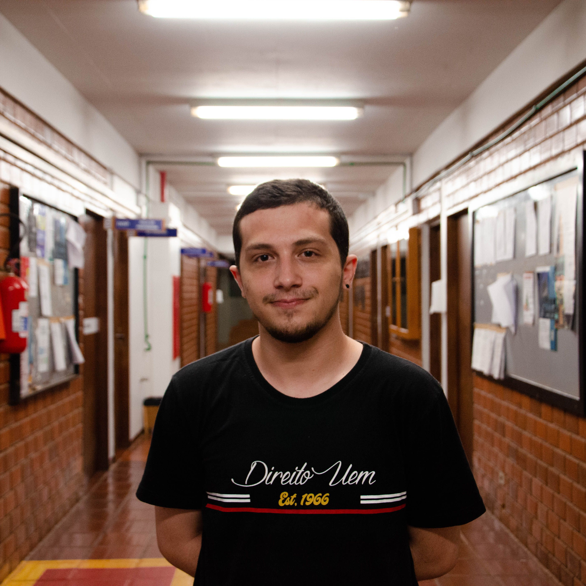
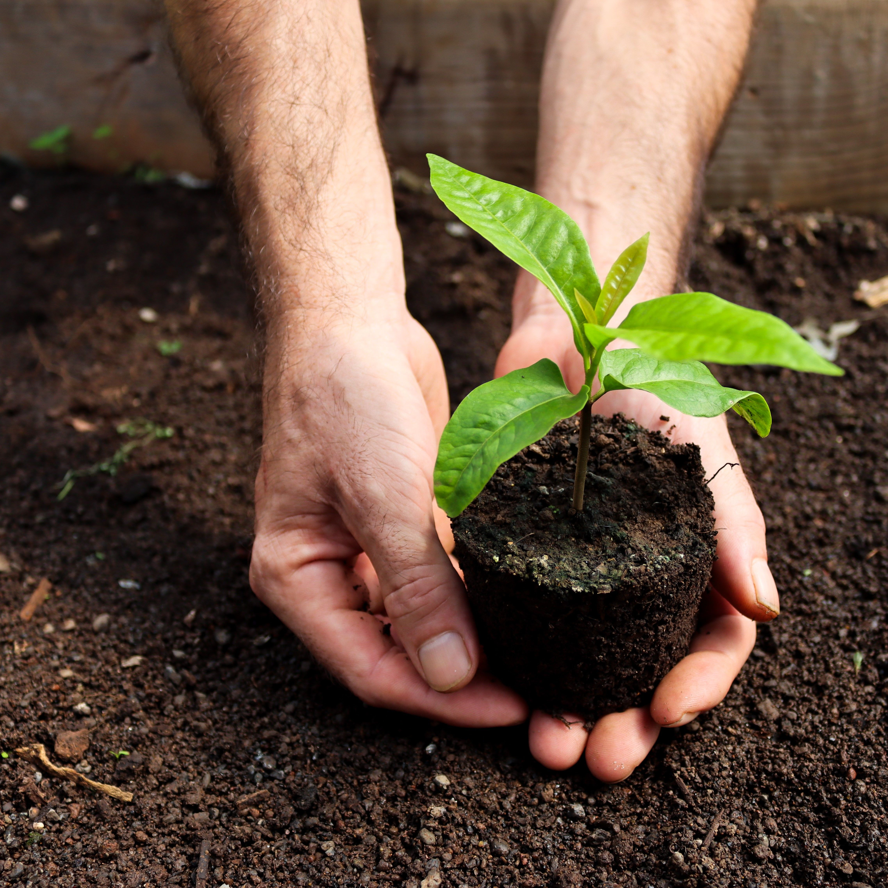

Explore expert insights, industry updates, and inspiring stories designed to keep you informed and connected every day.
Discover Our Story in Agriculture
We empower farmers by providing innovative, sustainable solutions that foster growth, resilience, community development, and long-term agricultural success.
Get Started NowWe Empower Farmers With Innovative, Sustainable Solutions That Help Grow Healthier Crops, Protect the Planet, and Ensure Agricultural Success
45%
Sustainable innovations
75%
Farmer empowerment


Come and Meet Our Experienced Team of Experts
John Peterson
Founder and owner
Michael Brown
Farm manager
Sarah Thompson
Agricultural operations

David Wilson
Crop production specialist
Alicia Henderson
Soil scientist
Thomas Clark
Agricultural engineer
Robert Davis
Crop consultant
Emily Benedict
Livestock nutritionist
Discover What Our Valued Customers Are Saying About Us
John Miller
Senior Crop FarmerThanks to their solutions, our yields have increased by 25%, and energy costs have significantly dropped. Highly recommend their expertise!
5.0
Emily Rodriguez
Organic Farm ManagerThe team provided exceptional support from start to finish. Their solar systems are reliable and eco-friendly – perfect for our organic farm.
5.0
David Chen
Agricultural Operations SpecialistProfessional service and tailored solutions that really meet the needs of modern agriculture. From the initial consultation to the final installation, the team was attentive and responsive, making sure every detail was addressed.
Their solar energy systems have helped us reduce costs while improving our farm’s sustainability. We’re very satisfied with the results and look forward to continuing our partnership.
Beyond the impressive technology, what truly stands out is their commitment to long-term support. They continue to provide guidance, answer questions promptly, and ensure that our systems run at peak performance. It’s reassuring to work with a company that cares just as much about the future of our farm as we do.
4.9
2500+ clients
Our commitment to quality, innovation, and reliability has consistently earned the trust and confidence of farmers.


Ready to Get Started on Your Next Big Project?
Take the first step toward sustainable and efficient agricultural energy solutions. Our team is here to support you every step of the way – from consultation to installation and beyond.